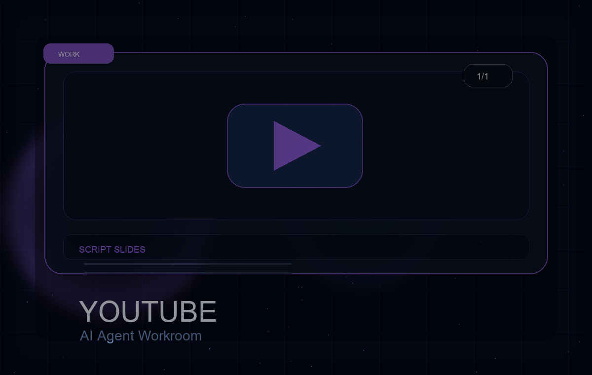

作業の目的
noteやサイト運用の内容を、YouTube動画の構成と台本に変換する。

1/1YouTube / Codex
noteやサイト運用の内容を、YouTubeの台本とスライド構成へ展開した動画制作準備の事例。
Work detail
noteやサイト運用の内容を、YouTube動画の構成と台本に変換する。
動画の導入、章立て、話す内容、画面に出すスライド案まで整理できた。
元記事、訴求したい商品、動画の目的、想定視聴者。
話すテンポ、尺、声に出した時の自然さは収録前に人間が調整するとよい。
記事やnoteを動画導線へ展開したい人。
想定尺に対して台本が短くなりやすいので、収録尺ベースで確認する。
Related works